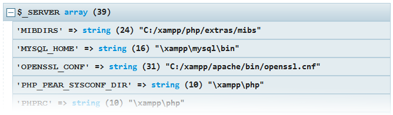
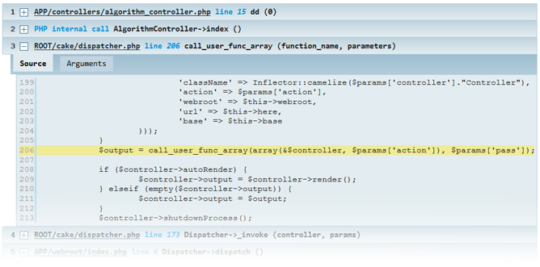

Zero-setup replacement for var_dump(), print_r() and debug_backtrace().
Kint for PHP is a tool designed to present your debugging data in the absolutely best way possible in all conceivable aspects.
In other words, it's var_dump() and debug_backtrace() on steroids. Easy to use, but
powerful and customizable. An essential addition to your development toolbox.
Still lost? You use it to see what's inside variables.
Why in the world would I want to replace my trusty
Youecho'<pre>';var_dump($var);die;?
d($var) (it's an alias for Kint::dump()). See
below for complete usage.
PHP 5+ (extra functionality with 5.3+); modern era browser; optionally mb_string
support for better character detection.
Simply place the kint directory anywhere comfy and include the Kint.class.php file from there.
<?php
require '/kint/Kint.class.php';
Kint::dump( $_SERVER );
// or, even easier, use a shorthand:
d( $_SERVER );
// or, to seize execution after dumping use dd();
dd( $_SERVER ); // same as d( $_SERVER ); die;
// to see trace:
Kint::trace();
// or pass 1 to a dumper function
Kint::dump( 1 );
// to disable all output
Kint::enabled(false);
// further calls, this one included, will not yield any output
d('Get off my lawn!'); // no effect
You can optionally copy the included config.default.php and rename to
config.php to override default values, but that's, again, entirely optional and you're
fine without this step.
For instance you can change the theme theme there:
Each option is heavily documented in the configuration file.
See the usage section on how to produce the output.
You are presented with a collapsible trace leading up to your call, you get to see the actual code of each step, the full dump of arguments that were passed, and - if available - the object which contained the method that was called.
To output variable info in a lightweight, HTML-free fashion use
<?php s( $variable ); // and sd( $variable ); // to exit immediately afterwards
The output is whitespace-formatted and uses no HTML/CSS/JS. It still HTML-escapes variables though.
Kint also uses a non-standard PHP feature: modifiers. This is not a language feature; Kint achieves that by analyzing code that was used to call the dump functions (long story :).
<?php +Kint::dump( $variable ); // or, as usual +d( $variable );
+Kint::dump(); will bypass the nesting depth limit.
*DEPTH TOO GREAT* messages,
use this modifier to ignore them for that one call.
-Kint::dump(); will clean all previous output to screen before displaying the dump.
dd();ob_clean() and ob_start() are used
beforehand.
@Kint::dump(); will return the output of the Kint::dump() instead of displaying it on screen.
!Kint::dump(); will display the dump expanded by default so you don't have to click :)This tool is used heavily in real life development by the developer and constantly improved, just not committed as often. Issues and feature requests are very welcome and will be fixed/implemented as soon as possible.
Avoid using this tool in non-development environment settings, I cannot be held responsible for the performance, security and/or stability issues Kint may cause. No license attached: use however you wish, I'd just be grateful for a backlink and feedback is always appreciated.
For integration plugins to frameworks and other systems see here.
Original design by Mindaugas Stankaitis
See contributors on Github.
Check out an awesome universal code decoder by a friend of mine.
Rokas Šleinius a.k.a. Raveren
Leave a comment
comments powered by Disqus